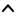

| Top |  |
| StTheme * | st_theme_new () |
| gboolean | st_theme_load_stylesheet () |
| void | st_theme_unload_stylesheet () |
| GSList * | st_theme_get_custom_stylesheets () |
| GFile * | application-stylesheet | Read / Write / Construct Only |
| GFile * | default-stylesheet | Read / Write / Construct Only |
| GFile * | theme-stylesheet | Read / Write / Construct Only |
StTheme holds a set of stylesheets. (The "cascade" of the name
Cascading Stylesheets.) A StTheme can be set to apply to all the actors
in a stage using st_theme_context_set_theme() or applied to a subtree
of actors using st_widget_set_theme().
StTheme * st_theme_new (GFile *application_stylesheet,GFile *theme_stylesheet,GFile *default_stylesheet);
application_stylesheet |
The highest priority stylesheet, representing application-specific
styling; this is associated with the CSS "author" stylesheet, may be |
|
theme_stylesheet |
The second priority stylesheet, representing theme-specific styling ;
this is associated with the CSS "user" stylesheet, may be |
|
default_stylesheet |
The lowest priority stylesheet, representing global default styling;
this is associated with the CSS "user agent" stylesheet, may be |
gboolean st_theme_load_stylesheet (StTheme *theme,GFile *file,GError **error);
GSList *
st_theme_get_custom_stylesheets (StTheme *theme);
the list of stylesheet files
that were loaded with st_theme_load_stylesheet().
[transfer full][element-type GFile]
“application-stylesheet” property “application-stylesheet” GFile *
The highest priority stylesheet, representing application-specific styling; this is associated with the CSS "author" stylesheet.
Flags: Read / Write / Construct Only
“default-stylesheet” property “default-stylesheet” GFile *
The lowest priority stylesheet, representing global default styling; this is associated with the CSS "user agent" stylesheet.
Flags: Read / Write / Construct Only
“custom-stylesheets-changed” signalvoid user_function (StTheme *sttheme, gpointer user_data)
Flags: Run Last